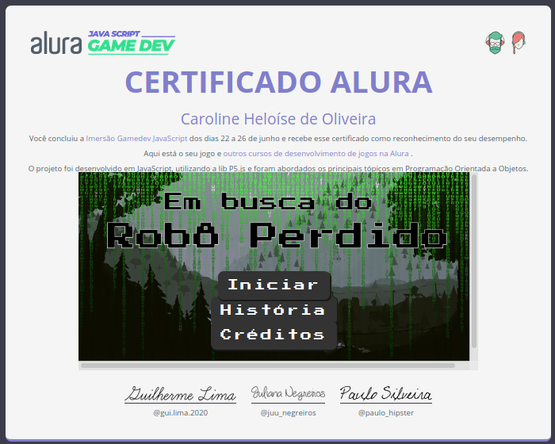

| _ [] X |
|---|
A Imersão GameDev ocorreu entre os dias 22 e 26 de junho de 2020 e foi uma maratona de 5 aulas promovida pela Alura e ministrada pelos instrutores Guilherme Lima e Juliana Negreiros.
Foram abordados tópicos essenciais de Programação Orientada a Objetos para a construção do nosso próprio jogo!
Utilizamos a biblioteca P5JS do JavaScript para desenvolvê-lo.
Em apenas 1 semana tivemos uma boa base de engines usadas em qualquer jogo, como: animações, colisão, mapas, powerups e gerenciamento de estado.
Clique nos links a seguir para visualizar:
| _ [] X |
|---|
Jogo:
| _ [] X |
|---|
Certificado:
